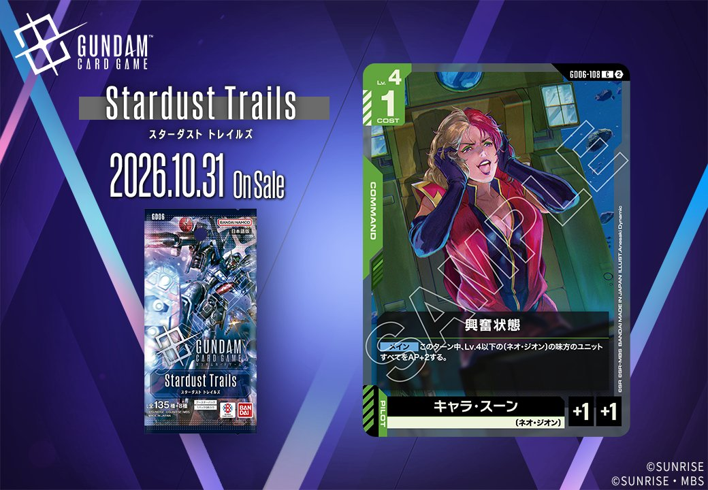
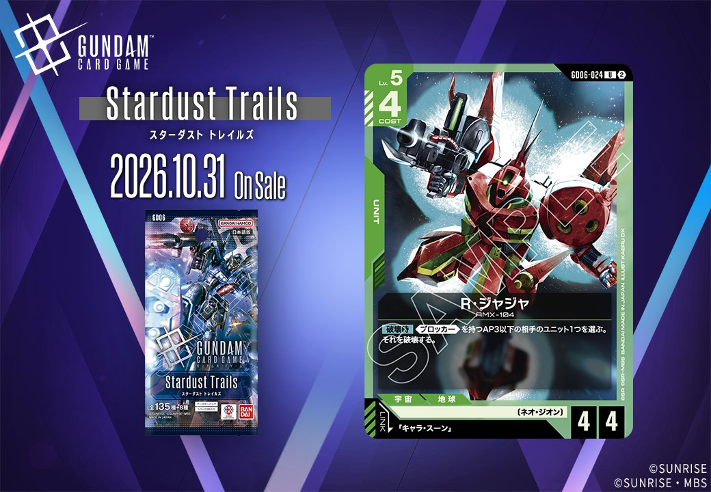
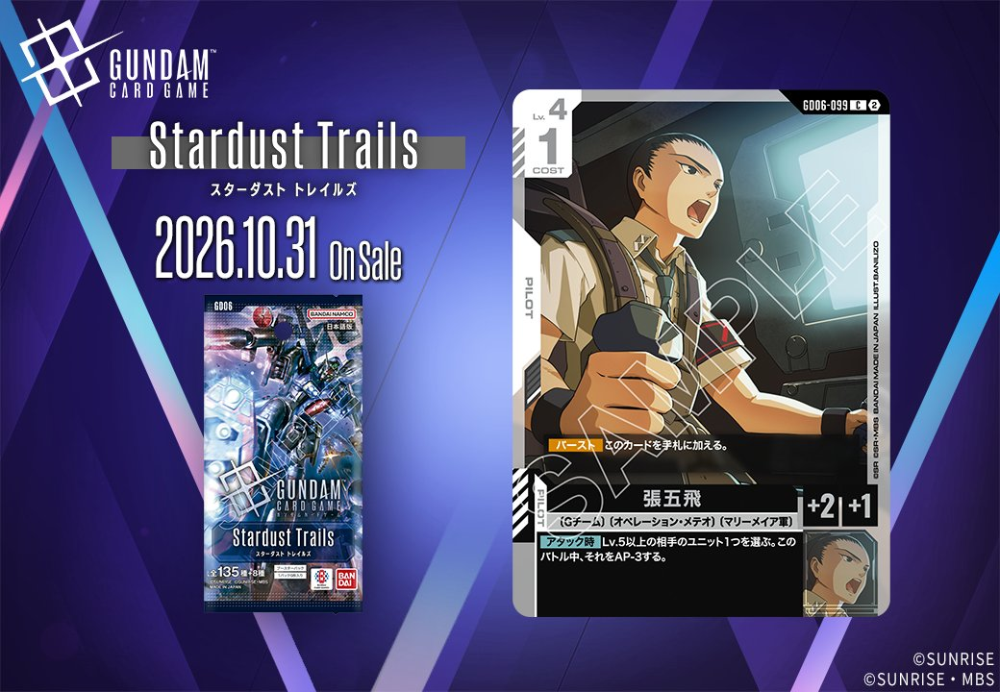
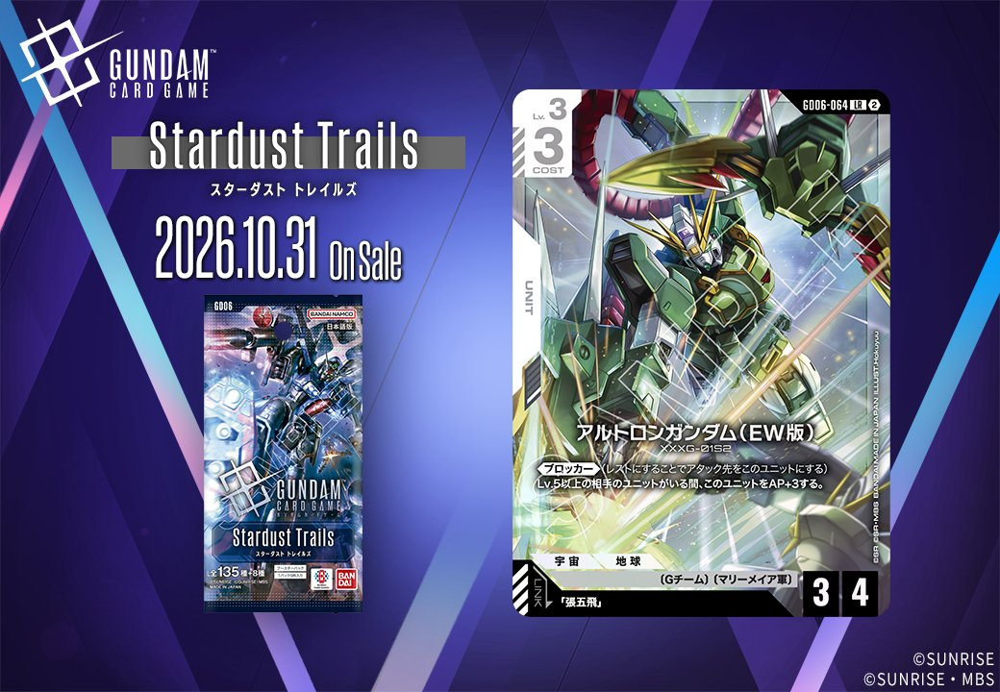

GD06に収録される新カード4枚が公開されました。発売日は2026年10月31日です。このうち白の2枚は、同日公開のUNITとPILOTがリンクで結ばれる組合せです。「張五飛」をリンク条件に指定するUNIT「アルトロンガンダム(EW版)」(GD06-064)と、PILOT「張五飛」(GD06-099)が同じ拡張で同じ色としてそろったため、GD06の中だけでリンク条件を満たす一組になっています。残る2枚は緑で、COMMAND「興奮状態」(GD06-108)と、「キャラ・スーン」をリンク条件に指定するUNIT「R・ジャジャ」(GD06-024)が加わります。

興奮状態 (GD06-108)
| 色 | 緑 | タイプ | COMMAND |
| Lv | 4 | コスト | 1 |
| パイロット | キャラ・スーン（補正 AP+1 / HP+1） 〔ネオ・ジオン〕 | ||
効果: 【メイン】このターン中、Lv.4以下の〔ネオ・ジオン〕の味方のユニットすべてをAP+2する。
興奮状態は緑のコマンドで、Lv.4・コスト1のカードになります。【メイン】で使い、このターン中、Lv.4以下の〔ネオ・ジオン〕の味方ユニットすべてをAP+2する効果です。全体強化のため、条件に合うユニットを多く並べた状態で使うほど1コストあたりの打点が伸びます。一方で〔ネオ・ジオン〕を持たないユニットやLv.5以上のユニットは対象外なので、構築段階で対象の数を確保しなければ効果を活かせません。関連カードのザクⅡ（シャア・アズナブル機）は【破壊時】に〔ジオン〕/〔ネオ・ジオン〕のユニットカードを手札に加えられ、頭数の補充手段になります。効果はこのターン限りなので、アタック前に使って攻勢の締めに充てる運用になるでしょう。

R・ジャジャ (GD06-024)
| 色 | 緑 | タイプ | UNIT |
| Lv | 5 | コスト | 4 |
| AP | 4 | HP | 4 |
| 特徴 | 〔ネオ・ジオン〕 | ||
| リンク条件 | 「キャラ・スーン」 | ||
効果: 【破壊時】《ブロッカー》を持つAP3以下の相手のユニット1つを選ぶ。それを破壊する。
R・ジャジャはLv.5、コスト4、AP4/HP4のユニットです。【破壊時】に、《ブロッカー》を持つAP3以下の相手ユニット1つを選んで破壊できます。対象は《ブロッカー》持ちかつAP3以下に限られるため、相手の場に該当するユニットがいなければ効果は空振りになります。条件を満たす相手に対しては、バトルで倒されても相手の壁を1枚減らせるので、後続のアタックを通しやすくなるでしょう。リンクは「キャラ・スーン」です。特徴〔ネオ・ジオン〕を持つため、ザクⅡ（シャア・アズナブル機）の【破壊時】でデッキ上3枚から手札に加える候補にもなります。

張五飛 (GD06-099)
| 色 | 白 | タイプ | PILOT |
| Lv | 4 | コスト | 1 |
| 補正 AP | 2 | 補正 HP | 1 |
| 特徴 | 〔Gチーム〕、〔オペレーション・メテオ〕、〔マリーメイア軍〕 | ||
効果: 【バースト】このカードを手札に加える。【アタック時】Lv.5以上の相手のユニット1つを選ぶ。このバトル中、それをAP-3する。
張五飛はLv.4・コスト1のパイロットで、【バースト】で手札に加わるため、シールドからめくれても損になりません。【アタック時】にLv.5以上の相手ユニット1つをこのバトル中AP-3でき、高Lvユニットへアタックする場面で効果を発揮します。同日公開のアルトロンガンダム(EW版)とはリンクが成立し、こちらは《ブロッカー》に加え、相手にLv.5以上のユニットがいる間はAP+3となる効果を持っています。両者の条件は「Lv.5以上の相手ユニット」で揃っており、該当ユニットとのバトルではAP差を大きく広げられるでしょう。反対に、低Lvのユニット中心の相手にはどちらの効果も働きません。

アルトロンガンダム(EW版) (GD06-064)
| 色 | 白 | タイプ | UNIT |
| Lv | 3 | コスト | 3 |
| AP | 3 | HP | 4 |
| 特徴 | 〔Gチーム〕、〔マリーメイア軍〕 | ||
| リンク条件 | 「張五飛」 | ||
効果: 《ブロッカー》(レストにすることでアタック先をこのユニットにする)Lv.5以上の相手のユニットがいる間、このユニットをAP+3する。
アルトロンガンダム(EW版)は、コスト3・Lv.3でAP3/HP4の《ブロッカー》を持つユニットです。Lv.5以上の相手ユニットがいる間はAP6になるため、高Lvユニットのアタックを受け止める役に向いています。リンク先の「張五飛」は、【アタック時】にLv.5以上の相手ユニット1つをバトル中AP-3にできます。AP+3は条件を満たしている間続く効果なので、五飛をセットしたこのユニットでLv.5以上のユニットにアタックすれば、自身のAP上昇と相手のAP低下が同じバトル中に重なるでしょう。一方、Lv.5以上のユニットがいない相手には素のAP3で戦うことになる点に注意が必要です。
関連カード
-
 ザクⅡ(ST03-008)緑系デッキ内採用率24.2% (2004デッキ)
ザクⅡ(ST03-008)緑系デッキ内採用率24.2% (2004デッキ) -
 リック・ドム(GD01-030)緑系デッキ内採用率23.2% (1922デッキ)
リック・ドム(GD01-030)緑系デッキ内採用率23.2% (1922デッキ) -
 ザクⅡ（シャア・アズナブル機）(ST03-006)緑系デッキ内採用率14.9% (1231デッキ)
ザクⅡ（シャア・アズナブル機）(ST03-006)緑系デッキ内採用率14.9% (1231デッキ) -
 シャア・アズナブル(ST03-011)緑系デッキ内採用率13.6% (1130デッキ)
シャア・アズナブル(ST03-011)緑系デッキ内採用率13.6% (1130デッキ) -
 ジオング(GD04-017)緑系デッキ内採用率12.1% (1005デッキ)
ジオング(GD04-017)緑系デッキ内採用率12.1% (1005デッキ) -
キュベレイ(ST13-001)緑系デッキ内採用率1% (79デッキ)
-
 ハマーン・カーン(ST13-011)緑系デッキ内採用率0.9% (76デッキ)
ハマーン・カーン(ST13-011)緑系デッキ内採用率0.9% (76デッキ) -
 エルピー・プル(GD06-084)NEW緑系 — 同色・共通特徴: ネオ・ジオン（新カード）
エルピー・プル(GD06-084)NEW緑系 — 同色・共通特徴: ネオ・ジオン（新カード） -
 キュベレイMk-Ⅱ〈エルピー・プル専用〉(GD06-018)NEW緑系 — 同色・共通特徴: ネオ・ジオン（新カード）
キュベレイMk-Ⅱ〈エルピー・プル専用〉(GD06-018)NEW緑系 — 同色・共通特徴: ネオ・ジオン（新カード） -
 キュベレイMk-Ⅱ(エルピー・プル専用)(GD06-029)NEW緑系 — 同色・共通特徴: ネオ・ジオン（新カード）
キュベレイMk-Ⅱ(エルピー・プル専用)(GD06-029)NEW緑系 — 同色・共通特徴: ネオ・ジオン（新カード）